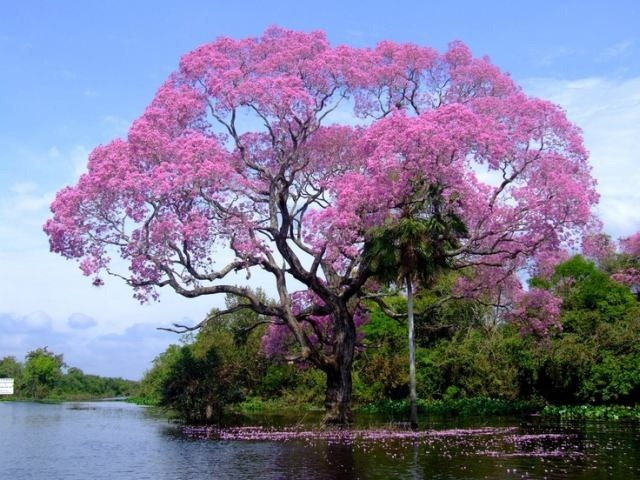
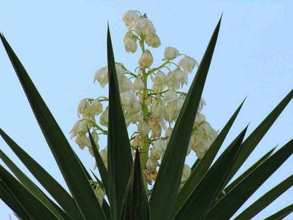
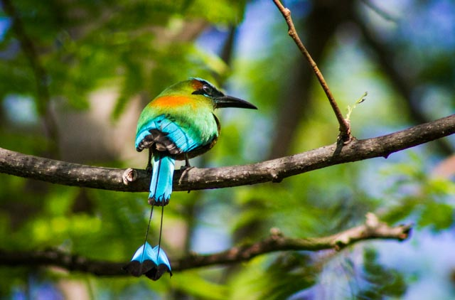
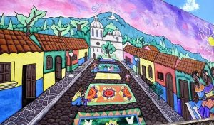

El Salvador

Historia
El Salvador es una pequeña nación de América Central. Es conocida por sus playas en el océano Pacífico, los sitios de surf y el paisaje montañoso. Su Ruta de las Flores es un camino serpenteante que pasa por plantaciones de café, bosques tropicales con cascadas y ciudades como Juayúa, con sus festivales gastronómicos cada fin de semana, junto con Ataco, donde hay alegres murales.
Extensión territorial
El Salvador, es un país soberano de América Central ubicado en el litoral del océano Pacífico con una extensión territorial de 21 041 km².
Símbolos patrios
Maquilishuat
Flor de Izote
El Torogoz
Departamentos
Ahuachapán, Santa Ana, Sonsonate, Usulután, San Miguel, Morazán, La Unión, La Libertad, Chalatenango, Cuscatlán, San Salvador, La Paz, Cabañas y San Vicente.
Lugares turísticos
Playa El Tunco

Ruta de las Flores
Lago de Coatepeque